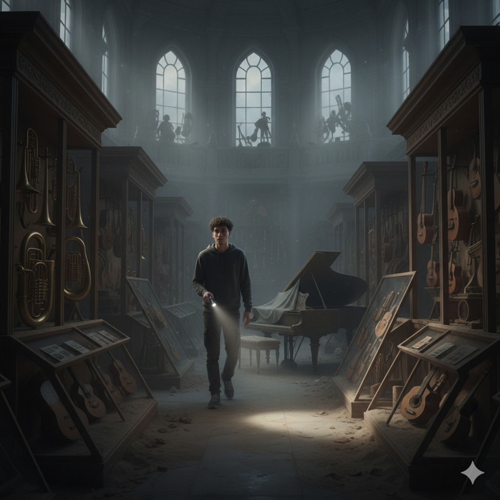

Capítulo 1: Eco Olvidado
En el año 2185, la música en vivo es un recuerdo lejano. Raizura, un joven de 17 años, encuentra un piano de madera oscura y, al tocarlo, despierta algo más que solo música...
El ritmo sigue vivo...
Habla con Fruko
El fantasma de la sabrosura te escucha. Escribe tu nombre para recibir su mensaje.
Esperando tu señal...
Recuerdos del Museo

La Trama se Revela
Descubre los momentos clave que definen el viaje de Raizura.